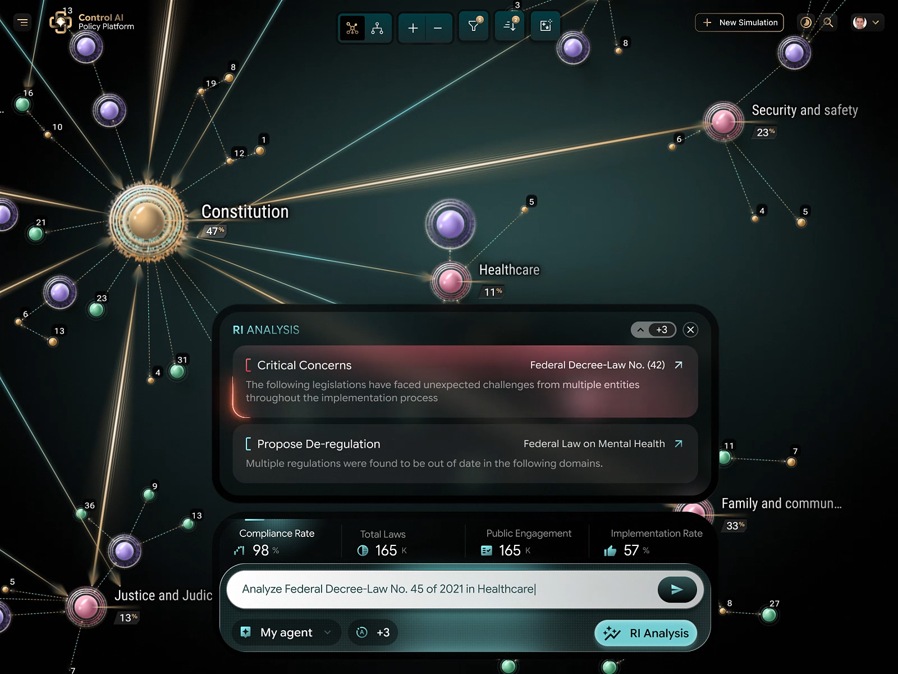
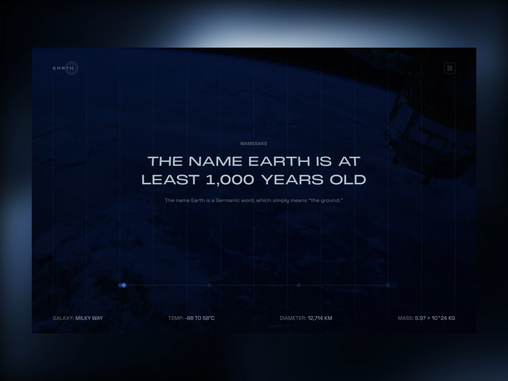

SEE EARTH
DIFFERENTLY.
Ask a question. DEVLOK finds the evidence.
Start with plain language.
No GIS workflow to assemble, no model to hand-pick. Ask about what you see — DEVLOK decides which data and models the question needs.
One interface for single images, optical–SAR pairs, and bi-temporal observations. The query carries the intent; the agent carries the plan.
Every answer returns text, spatial evidence, and an execution summary.
The agent decides.
Adapted from satquery-agent-decides.html (SatQuery project reference) — the query determines the workflow, not the other way round.
One image, three skills.
The specialist bench for single optical, multispectral, or SAR frames.
Ask pointed questions about land cover, objects, and layout in a single observation.
VQA SPECIALISTA grounded natural-language summary of what the sensor actually recorded.
DESCRIBELink phrases to pixels — every claim points at a region you can inspect.
GROUNDOne image isn’t always enough.
Adapted from satquery-crossmodal.html (SatQuery project reference). Drag the fader — the same ground read twice, then understood jointly.

OPTICALVISUAL DEMONSTRATION — illustrative fusion preview, not a live model run.
Complementary, then combined.
OPTICAL gives spectral, contextual information — land cover, vegetation, texture. SAR provides complementary structural information and keeps working through cloud cover, day or night. DEVLOK aligns both to shared coordinates, then reasons over the fused layer.
Time leaves evidence.
Adapted from time-leaves-evidence.html and satquery-find-the-change.html (SatQuery project references). The same geographic scene, 2018 → 2026 — watch buildings, roads, and land use change, then see the change mask. Drag the divider; tap a highlighted region.

WHAT CHANGED? · WHERE? · WHEN? — the change mask answers all three.
Something changed here.
Three candidate regions survived the bi-temporal pass. Select each one to reveal its evidence.
Select a region above.
VISUAL DEMONSTRATION — illustrative imagery and regions.
Yes — and here is where.
The verified result for “Has the built-up area increased, and where?” No invented confidence or benchmark scores — only the trace.
Tuned for orbit, not for the web.
Generic vision-language models meet remote-sensing data — then serve inside the DEVLOK agent. Datasets below are training and evaluation resources, not performance claims.
One Earth. Many questions.
From satquery-mission-selector.html (SatQuery project reference). Pick a mission — its question loads straight into the analysis terminal.
Ask DEVLOK.
A preview of the DEVLOK console. Chips fill the prompt; Run walks the demo trace.
PREVIEW CONSOLE — the trace below is simulated for demonstration.